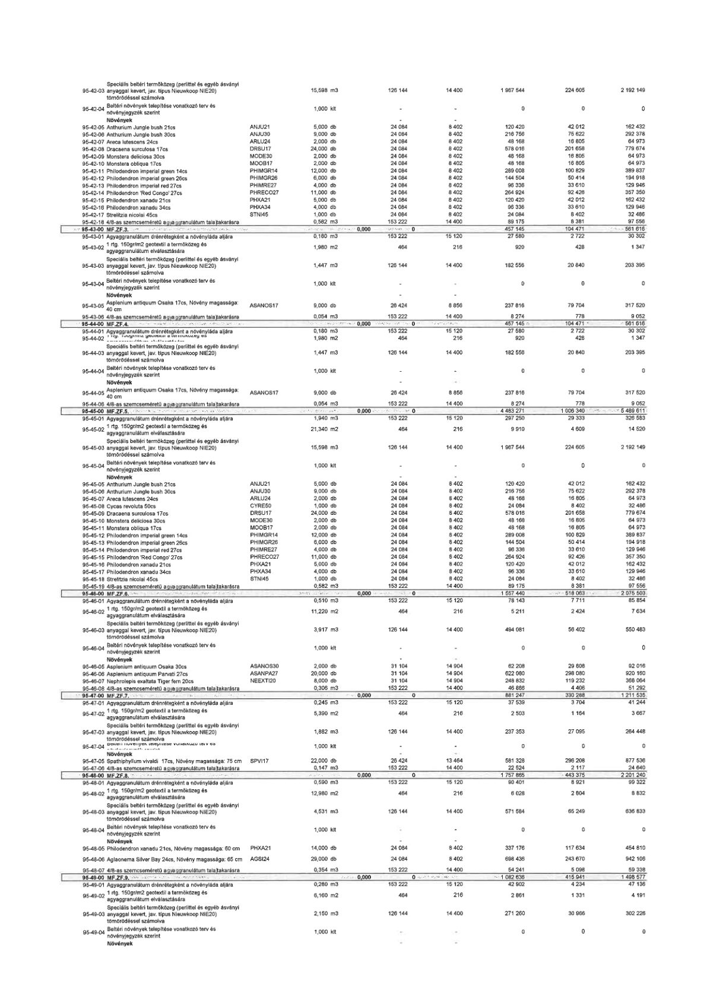

| Tétel | Menny. | Egys. | Anyag e.ár (net HUF) | Díj e.ár (net HUF) | Anyag összesen (net HUF) | Díj összesen (net HUF) | Anyag+Díj összesen (net HUF) |
|---|---|---|---|---|---|---|---|
| 95-42-03 Speciális beltéri termőközeg (perlittel és egyéb ásványi anyaggal kevert, jav. típus Nieuwkoop NIE20) tömörödéssel számolva | 15,598 | m3 | 126 144 | 14 400 | 1 967 544 | 224 605 | 2 192 149 |
| 95-42-04 Beltéri növények telepítése vonatkozó terv és növényjegyzék szerint | 1,000 | klt | 0 | 0 | 0 | 0 | 0 |
| 95-42-05 Anthurium Jungle bush 21cs | 5,000 | db | 24 084 | 8 402 | 120 420 | 42 012 | 162 432 |
| 95-42-06 Anthurium Jungle bush 30cs | 9,000 | db | 24 084 | 8 402 | 216 756 | 75 622 | 292 378 |
| 95-42-07 Areca lutescens 24cs | 2,000 | db | 24 084 | 8 402 | 48 168 | 16 805 | 64 973 |
| 95-42-08 Dracaena surculosa 17cs | 24,000 | db | 24 084 | 8 402 | 578 016 | 201 658 | 779 674 |
| 95-42-09 Monstera deliciosa 30cs | 2,000 | db | 24 084 | 8 402 | 48 168 | 16 805 | 64 973 |
| 95-42-10 Monstera obliqua 17cs | 2,000 | db | 24 084 | 8 402 | 48 168 | 16 805 | 64 973 |
| 95-42-11 Philodendron Imperial green 14cs | 12,000 | db | 24 084 | 8 402 | 289 008 | 100 829 | 389 837 |
| 95-42-12 Philodendron Imperial green 26cs | 6,000 | db | 24 084 | 8 402 | 144 504 | 50 414 | 194 918 |
| 95-42-13 Philodendron Imperial red 27cs | 4,000 | db | 24 084 | 8 402 | 96 336 | 33 610 | 129 946 |
| 95-42-14 Philodendron 'Red Congo' 27cs | 11,000 | db | 24 084 | 8 402 | 264 924 | 92 426 | 357 350 |
| 95-42-15 Philodendron xanadu 21cs | 5,000 | db | 24 084 | 8 402 | 120 420 | 42 012 | 162 432 |
| 95-42-16 Philodendron xanadu 34cs | 4,000 | db | 24 084 | 8 402 | 96 336 | 33 610 | 129 946 |
| 95-42-17 Strelitzia nicolai 45cs | 1,000 | db | 24 084 | 8 402 | 24 084 | 8 402 | 32 486 |
| 95-42-18 4/8-as szemcseméretű agyaggranulátum talajtakarásra | 0,582 | m3 | 153 222 | 14 400 | 89 175 | 8 381 | 97 556 |
| 95-43-01 Agyaggranulátum drénrétegként a növényláda aljára | 0,180 | m3 | 153 222 | 15 120 | 27 580 | 2 722 | 30 302 |
| 95-43-02 1 rtg. 150g/m2 geotextil a termőközeg és agyaggranulátum elválasztására | 1,980 | m2 | 464 | 216 | 920 | 428 | 1 347 |
| 95-43-03 Speciális beltéri termőközeg (perlittel és egyéb ásványi anyaggal kevert, jav. típus Nieuwkoop NIE20) tömörödéssel számolva | 1,447 | m3 | 126 144 | 14 400 | 182 556 | 20 840 | 203 395 |
| 95-43-04 Beltéri növények telepítése vonatkozó terv és növényjegyzék szerint | 1,000 | klt | 0 | 0 | 0 | 0 | 0 |
| 95-43-05 Asplenium antiquum Osaka 17cs, Növény magassága: 40 cm | 9,000 | db | 26 424 | 8 856 | 237 816 | 79 704 | 317 520 |
| 95-43-06 4/8-as szemcseméretű agyaggranulátum talajtakarásra | 0,054 | m3 | 153 222 | 14 400 | 8 274 | 778 | 9 052 |
| 95-44-01 Agyaggranulátum drénrétegként a növényláda aljára | 0,180 | m3 | 153 222 | 15 120 | 27 580 | 2 722 | 30 302 |
| 95-44-02 1 rtg. 150g/m2 geotextil a termőközeg és agyaggranulátum elválasztására | 1,980 | m2 | 464 | 216 | 920 | 428 | 1 347 |
| 95-44-03 Speciális beltéri termőközeg (perlittel és egyéb ásványi anyaggal kevert, jav. típus Nieuwkoop NIE20) tömörödéssel számolva | 1,447 | m3 | 126 144 | 14 400 | 182 556 | 20 840 | 203 395 |
| 95-44-04 Beltéri növények telepítése vonatkozó terv és növényjegyzék szerint | 1,000 | klt | 0 | 0 | 0 | 0 | 0 |
| 95-44-05 Asplenium antiquum Osaka 17cs, Növény magassága: 40 cm | 9,000 | db | 26 424 | 8 856 | 237 816 | 79 704 | 317 520 |
| 95-44-06 4/8-as szemcseméretű agyaggranulátum talajtakarásra | 0,054 | m3 | 153 222 | 14 400 | 8 274 | 778 | 9 052 |
| 95-46-01 Agyaggranulátum drénrétegként a növényláda aljára | 0,510 | m3 | 153 222 | 15 120 | 78 143 | 7 711 | 85 854 |
| 95-46-02 1 rtg. 150g/m2 geotextil a termőközeg és agyaggranulátum elválasztására | 11,220 | m2 | 464 | 216 | 5 211 | 2 424 | 7 634 |
| 95-46-03 Speciális beltéri termőközeg (perlittel és egyéb ásványi anyaggal kevert, jav. típus Nieuwkoop NIE20) tömörödéssel számolva | 3,917 | m3 | 126 144 | 14 400 | 494 081 | 56 402 | 550 483 |
| 95-46-04 Beltéri növények telepítése vonatkozó terv és növényjegyzék szerint | 1,000 | klt | 0 | 0 | 0 | 0 | 0 |
| 95-46-05 Asplenium antiquum Osaka 30cs | 2,000 | db | 31 104 | 14 904 | 62 208 | 29 808 | 92 016 |
| 95-46-06 Asplenium antiquum Parvati 27cs | 20,000 | db | 31 104 | 14 904 | 622 080 | 298 080 | 920 160 |
| 95-46-07 Nephrolepis exaltata Tiger fern 20cs | 8,000 | db | 31 104 | 14 904 | 248 832 | 119 232 | 368 064 |
| 95-46-08 4/8-as szemcseméretű agyaggranulátum talajtakarásra | 0,306 | m3 | 153 222 | 14 400 | 46 886 | 4 406 | 51 292 |
| 95-47-01 Agyaggranulátum drénrétegként a növényláda aljára | 0,245 | m3 | 153 222 | 15 120 | 37 539 | 3 704 | 41 244 |
| 95-47-02 1 rtg. 150g/m2 geotextil a termőközeg és agyaggranulátum elválasztására | 5,390 | m2 | 464 | 216 | 2 501 | 1 164 | 3 667 |
| 95-47-03 Speciális beltéri termőközeg (perlittel és egyéb ásványi anyaggal kevert, jav. típus Nieuwkoop NIE20) tömörödéssel számolva | 1,882 | m3 | 126 144 | 14 400 | 237 353 | 27 095 | 264 448 |
| 95-47-04 Beltéri növények telepítése vonatkozó terv és növényjegyzék szerint | 1,000 | klt | 0 | 0 | 0 | 0 | 0 |
| 95-47-05 Spathiphyllum vivaldi 17cs, Növény magassága: 75 cm | 22,000 | db | 26 424 | 13 464 | 581 328 | 296 208 | 877 536 |
| 95-47-06 4/8-as szemcseméretű agyaggranulátum talajtakarásra | 0,147 | m3 | 153 222 | 14 400 | 22 524 | 2 117 | 24 640 |
| 95-48-01 Agyaggranulátum drénrétegként a növényláda aljára | 0,590 | m3 | 153 222 | 15 120 | 90 401 | 8 921 | 99 322 |
| 95-48-02 1 rtg. 150g/m2 geotextil a termőközeg és agyaggranulátum elválasztására | 12,980 | m2 | 464 | 216 | 6 028 | 2 804 | 8 832 |
| 95-48-03 Speciális beltéri termőközeg (perlittel és egyéb ásványi anyaggal kevert, jav. típus Nieuwkoop NIE20) tömörödéssel számolva | 4,531 | m3 | 126 144 | 14 400 | 571 584 | 65 249 | 636 833 |
| 95-48-04 Beltéri növények telepítése vonatkozó terv és növényjegyzék szerint | 1,000 | klt | 0 | 0 | 0 | 0 | 0 |
| 95-48-05 Philodendron xanadu 21cs, Növény magassága: 60 cm | 14,000 | db | 24 084 | 8 402 | 337 176 | 117 634 | 454 810 |
| 95-48-06 Aglaonema Silver Bay 24cs, Növény magassága: 65 cm | 29,000 | db | 24 084 | 8 402 | 698 436 | 243 670 | 942 106 |
| 95-48-07 4/8-as szemcseméretű agyaggranulátum talajtakarásra | 0,354 | m3 | 153 222 | 14 400 | 54 241 | 5 098 | 59 338 |
| 95-49-01 Agyaggranulátum drénrétegként a növényláda aljára | 0,280 | m3 | 153 222 | 15 120 | 42 902 | 4 234 | 47 136 |
| 95-49-02 1 rtg. 150g/m2 geotextil a termőközeg és agyaggranulátum elválasztására | 6,160 | m2 | 464 | 216 | 2 861 | 1 331 | 4 191 |
| 95-49-03 Speciális beltéri termőközeg (perlittel és egyéb ásványi anyaggal kevert, jav. típus Nieuwkoop NIE20) tömörödéssel számolva | 2,150 | m3 | 126 144 | 14 400 | 271 260 | 30 966 | 302 226 |
| 95-49-04 Beltéri növények telepítése vonatkozó terv és növényjegyzék szerint | 1,000 | klt | 0 | 0 | 0 | 0 | 0 |
